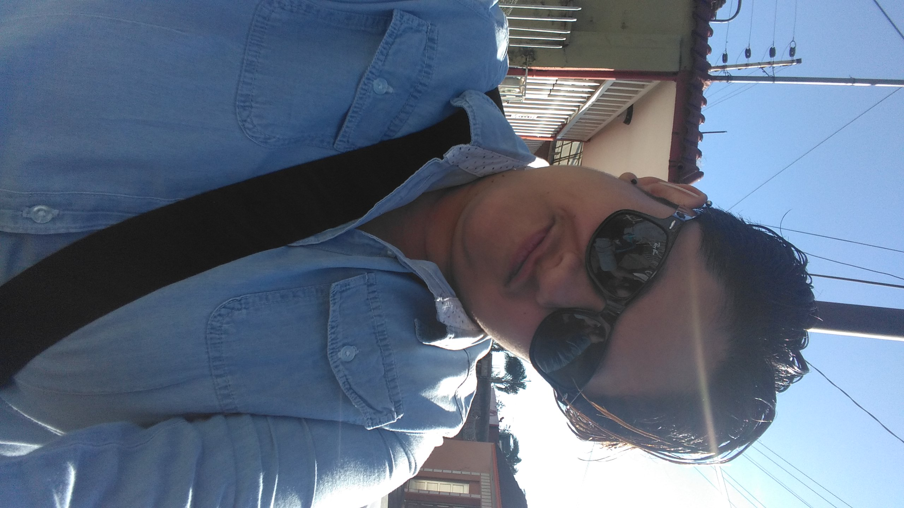

Este es un ejemplo de currículum vitae. Cualquier parecido con la realidad es pura coincidencia.

Nombre y Apellidos: Montserrat Muñoz Velázquez
Dirección: Norte 3 no. 189
Teléfono: 2721880934
Email: askmon@hotmail.com
Nacionalidad: Mexicana
Fecha de nacimiento: 16 de Julio de 1986
CURP: MUVM860716MVZXLN05
2008-2010: Sedesol Oportunidades. Desempeñe el puesto de Promotor Social
2010-2012: C4 Gobierno de Veracruz. Desempeñe el puesto de Promotor Social para las elecciones electorales
2015-2020: Diamen Consultores y Asociados SC. Desempeño el puesto de Auxiliar Contable
2015-2020: Instituto Tecnológico Nacional Campus Orizaba
2012-2015: Centro de Bachilleratos Tecnológico Industrial y de Servicios no. 192
2009-2012: Secundaria Tecnica no. 74
2003-2009: Escuela Primaria Aztlan
Liderazgo
Trabajo en equipo
Alto nivel de compromiso
Español
Inglés: Nivel Medio. Centro de Idiomas Universidad Veracruzana.
1997-1999: Monitor de campamento de verano (30 días) organizado por el Ayuntamiento de Códoba (Veracruz)
Informática: Conocimientos altos a nivel de usuario en sistemas Windows. Conocimientos medios a nivel usuario en sistemas GNU/Linux. Conocimientos altos a nivel de usuario en procesadores de texto, hojas de cálculo, presentaciones, tratamiento de imágenes. Conocimientos altos a nivel de programador en sistemas Windows (Visual Basic).
licencia de conducir B-1 obtenido el 26 de marzo de 1997, Vehículo propio, Disponibilidad para viajar.
Además de los puestos de trabajo relacionados, les podré ofrecer las que consideren oportunas en caso de que me las soliciten.